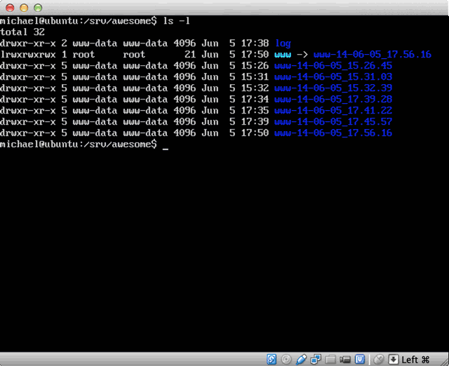
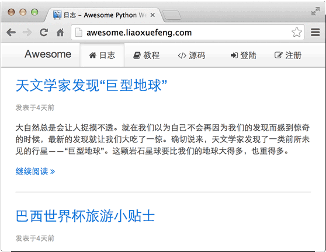

Day 15 - 部署Web App
作为一个合格的开发者，在本地环境下完成开发还远远不够，我们需要把Web App部署到远程服务器上，这样，广大用户才能访问到网站。
很多做开发的同学把部署这件事情看成是运维同学的工作，这种看法是完全错误的。首先，最近流行DevOps理念，就是说，开发和运维要变成一个整体。其次，运维的难度，其实跟开发质量有很大的关系。代码写得垃圾，运维再好也架不住天天挂掉。最后，DevOps理念需要把运维、监控等功能融入到开发中。你想服务器升级时不中断用户服务？那就得在开发时考虑到这一点。
下面，我们就来把awesome-python-webapp部署到Linux服务器。
搭建Linux服务器
要部署到Linux，首先得有一台Linux服务器。要在公网上体验的同学，可以在Amazon的AWS申请一台EC2虚拟机（免费使用1年），或者使用国内的一些云服务器，一般都提供Ubuntu Server的镜像。想在本地部署的同学，请安装虚拟机，推荐使用VirtualBox。
我们选择的Linux服务器版本是Ubuntu Server 12.04 LTS，原因是apt太简单了。如果你准备使用其他Linux版本，也没有问题。
Linux安装完成后，请确保ssh服务正在运行，否则，需要通过apt安装：
$ sudo apt-get install openssh-server
有了ssh服务，就可以从本地连接到服务器上。建议把公钥复制到服务器端用户的.ssh/authorized_keys中，这样，就可以通过证书实现无密码连接。
部署方式
在本地开发时，我们可以用Python自带的WSGI服务器，但是，在服务器上，显然不能用自带的这个开发版服务器。可以选择的WSGI服务器很多，我们选gunicorn：它用类似Nginx的Master-Worker模式，同时可以提供gevent的支持，不用修改代码，就能获得极高的性能。
此外，我们还需要一个高性能Web服务器，这里选择Nginx，它可以处理静态资源，同时作为反向代理把动态请求交给gunicorn处理。gunicorn负责调用我们的Python代码，这个模型如下：

Nginx负责分发请求：

在服务器端，我们需要定义好部署的目录结构：
/
+- srv/
+- awesome/ <-- Web App根目录
+- www/ <-- 存放Python源码
| +- static/ <-- 存放静态资源文件
+- log/ <-- 存放log
在服务器上部署，要考虑到新版本如果运行不正常，需要回退到旧版本时怎么办。每次用新的代码覆盖掉旧的文件是不行的，需要一个类似版本控制的机制。由于Linux系统提供了软链接功能，所以，我们把www作为一个软链接，它指向哪个目录，哪个目录就是当前运行的版本：

而Nginx和gunicorn的配置文件只需要指向www目录即可。
Nginx可以作为服务进程直接启动，但gunicorn还不行，所以，Supervisor登场！Supervisor是一个管理进程的工具，可以随系统启动而启动服务，它还时刻监控服务进程，如果服务进程意外退出，Supervisor可以自动重启服务。
总结一下我们需要用到的服务有：
Nginx：高性能Web服务器+负责反向代理；
gunicorn：高性能WSGI服务器；
gevent：把Python同步代码变成异步协程的库；
Supervisor：监控服务进程的工具；
MySQL：数据库服务。
在Linux服务器上用apt可以直接安装上述服务：
$ sudo apt-get install nginx gunicorn python-gevent supervisor mysql-server
然后，再把我们自己的Web App用到的Python库安装了：
$ sudo apt-get install python-jinja2 python-mysql.connector
在服务器上创建目录/srv/awesome/以及相应的子目录。
在服务器上初始化MySQL数据库，把数据库初始化脚本schema.sql复制到服务器上执行：
$ mysql -u root -p < schema.sql
服务器端准备就绪。
部署
用FTP还是SCP还是rsync复制文件？如果你需要手动复制，用一次两次还行，一天如果部署50次不但慢、效率低，而且容易出错。
正确的部署方式是使用工具配合脚本完成自动化部署。Fabric就是一个自动化部署工具。由于Fabric是用Python开发的，所以，部署脚本也是用Python来编写，非常方便！
要用Fabric部署，需要在本机（是开发机器，不是Linux服务器）安装Fabric：
$ easy_install fabric
Linux服务器上不需要安装Fabric，Fabric使用SSH直接登录服务器并执行部署命令。
下一步是编写部署脚本。Fabric的部署脚本叫fabfile.py，我们把它放到awesome-python-webapp的目录下，与www目录平级：
awesome-python-webapp/
+- fabfile.py
+- www/
+- ...
Fabric的脚本编写很简单，首先导入Fabric的API，设置部署时的变量：
# fabfile.py
import os, re
from datetime import datetime
# 导入Fabric API:
from fabric.api import *
# 服务器登录用户名:
env.user = 'michael'
# sudo用户为root:
env.sudo_user = 'root'
# 服务器地址，可以有多个，依次部署:
env.hosts = ['192.168.0.3']
# 服务器MySQL用户名和口令:
db_user = 'www-data'
db_password = 'www-data'
然后，每个Python函数都是一个任务。我们先编写一个打包的任务：
_TAR_FILE = 'dist-awesome.tar.gz'
def build():
includes = ['static', 'templates', 'transwarp', 'favicon.ico', '*.py']
excludes = ['test', '.*', '*.pyc', '*.pyo']
local('rm -f dist/%s' % _TAR_FILE)
with lcd(os.path.join(os.path.abspath('.'), 'www')):
cmd = ['tar', '--dereference', '-czvf', '../dist/%s' % _TAR_FILE]
cmd.extend(['--exclude=\'%s\'' % ex for ex in excludes])
cmd.extend(includes)
local(' '.join(cmd))
Fabric提供local('...')来运行本地命令，with lcd(path)可以把当前命令的目录设定为lcd()指定的目录，注意Fabric只能运行命令行命令，Windows下可能需要Cgywin环境。
在awesome-python-webapp目录下运行：
$ fab build
看看是否在dist目录下创建了dist-awesome.tar.gz的文件。
打包后，我们就可以继续编写deploy任务，把打包文件上传至服务器，解压，重置www软链接，重启相关服务：
_REMOTE_TMP_TAR = '/tmp/%s' % _TAR_FILE
_REMOTE_BASE_DIR = '/srv/awesome'
def deploy():
newdir = 'www-%s' % datetime.now().strftime('%y-%m-%d_%H.%M.%S')
# 删除已有的tar文件:
run('rm -f %s' % _REMOTE_TMP_TAR)
# 上传新的tar文件:
put('dist/%s' % _TAR_FILE, _REMOTE_TMP_TAR)
# 创建新目录:
with cd(_REMOTE_BASE_DIR):
sudo('mkdir %s' % newdir)
# 解压到新目录:
with cd('%s/%s' % (_REMOTE_BASE_DIR, newdir)):
sudo('tar -xzvf %s' % _REMOTE_TMP_TAR)
# 重置软链接:
with cd(_REMOTE_BASE_DIR):
sudo('rm -f www')
sudo('ln -s %s www' % newdir)
sudo('chown www-data:www-data www')
sudo('chown -R www-data:www-data %s' % newdir)
# 重启Python服务和nginx服务器:
with settings(warn_only=True):
sudo('supervisorctl stop awesome')
sudo('supervisorctl start awesome')
sudo('/etc/init.d/nginx reload')
注意run()函数执行的命令是在服务器上运行，with cd(path)和with lcd(path)类似，把当前目录在服务器端设置为cd()指定的目录。如果一个命令需要sudo权限，就不能用run()，而是用sudo()来执行。
配置Supervisor
上面让Supervisor重启gunicorn的命令会失败，因为我们还没有配置Supervisor呢。
编写一个Supervisor的配置文件awesome.conf，存放到/etc/supervisor/conf.d/目录下：
[program:awesome]
command = /usr/bin/gunicorn --bind 127.0.0.1:9000 --workers 1 --worker-class gevent wsgiapp:application
directory = /srv/awesome/www
user = www-data
startsecs = 3
redirect_stderr = true
stdout_logfile_maxbytes = 50MB
stdout_logfile_backups = 10
stdout_logfile = /srv/awesome/log/app.log
配置文件通过[program:awesome]指定服务名为awesome，command指定启动gunicorn的命令行，设定gunicorn的启动端口为9000，WSGI处理函数入口为wsgiapp:application。
然后重启Supervisor后，就可以随时启动和停止Supervisor管理的服务了：
$ sudo supervisorctl reload
$ sudo supervisorctl start awesome
$ sudo supervisorctl status
awesome RUNNING pid 1401, uptime 5:01:34
配置Nginx
Supervisor只负责运行gunicorn，我们还需要配置Nginx。把配置文件awesome放到/etc/nginx/sites-available/目录下：
server {
listen 80; # 监听80端口
root /srv/awesome/www;
access_log /srv/awesome/log/access_log;
error_log /srv/awesome/log/error_log;
# server_name awesome.liaoxuefeng.com; # 配置域名
# 处理静态文件/favicon.ico:
location /favicon.ico {
root /srv/awesome/www;
}
# 处理静态资源:
location ~ ^\/static\/.*$ {
root /srv/awesome/www;
}
# 动态请求转发到9000端口(gunicorn):
location / {
proxy_pass http://127.0.0.1:9000;
proxy_set_header X-Real-IP $remote_addr;
proxy_set_header Host $host;
proxy_set_header X-Forwarded-For $proxy_add_x_forwarded_for;
}
}
然后在/etc/nginx/sites-enabled/目录下创建软链接：
$ pwd
/etc/nginx/sites-enabled
$ sudo ln -s /etc/nginx/sites-available/awesome .
让Nginx重新加载配置文件，不出意外，我们的awesome-python-webapp应该正常运行：
$ sudo /etc/init.d/nginx reload
如果有任何错误，都可以在/srv/awesome/log下查找Nginx和App本身的log。如果Supervisor启动时报错，可以在/var/log/supervisor下查看Supervisor的log。
如果一切顺利，你可以在浏览器中访问Linux服务器上的awesome-python-webapp了：

如果在开发环境更新了代码，只需要在命令行执行：
$ fab build
$ fab deploy
自动部署完成！刷新浏览器就可以看到服务器代码更新后的效果。
友情链接
嫌国外网速慢的童鞋请移步网易和搜狐的镜像站点：